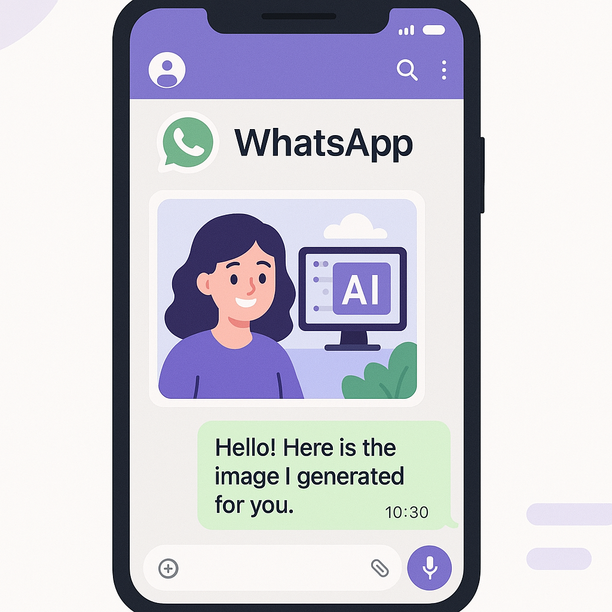
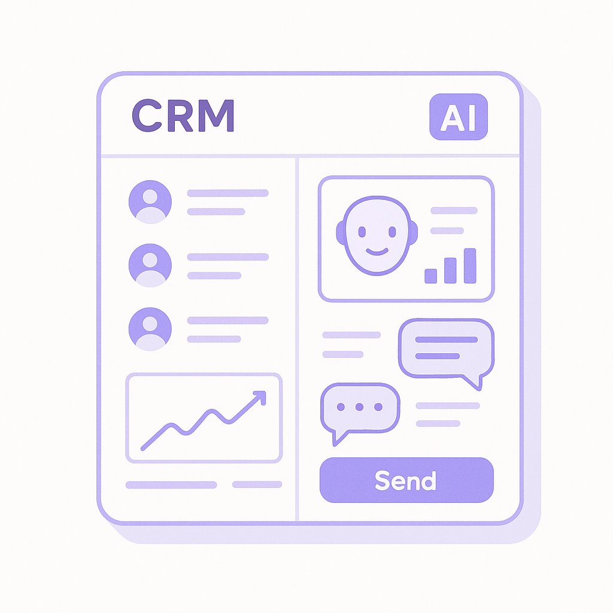

Publishing Recommendation
reviseThe posts generally align with current trends but contain several instances of overly promotional language and potential exaggeration, which need refinement to better fit our brand voice.
Today's drafts touch on relevant trends in AI, such as Meta's Muse Image integration and OpenAI's new voice agent model. However, the language often veers into promotional territory, which could undermine the credibility of the insights offered. A revision to tone down the marketing language and focus on concrete, evidence-backed claims is needed before publication.
LinkedIn Posts (7)
1. Meta launches Muse Image in Meta AI, Instagram, and WhatsApp ★ Purands solution · high priority
CTA: How do you see AI reshaping your customer engagement strategies?

⬇ Download image{kind=link}
Image prompt · isometric-flat
Caption: AI-enhanced engagement on WhatsApp.
Alternative hooks
- Meta's Muse Image AI is now in your chat apps.
- WhatsApp just got a lot more interesting for marketers.
- AI and WhatsApp: a new era in customer engagement.
Research behind this post (sources, summaries & confidence)
Meta launches Muse Image in Meta AI, Instagram, and WhatsApp conf 0.80 · AI Startups
Meta's launch of the Muse Image AI generator, integrated with Instagram and WhatsApp, highlights the increasing importance of AI in enhancing user engagement and commerce via popular platforms. This is particularly relevant for retention marketing strategies that leverage WhatsApp commerce.
Sources & what I took from each
- Meta launches Muse Image AI generator integrated with Instagram and WhatsApp.: Articles from TechCrunch and The Verge confirm the launch and integration of Muse Image AI generator. ↗ read source
- Integration with popular platforms enhances user engagement.: The integration with Instagram and WhatsApp could potentially increase user engagement due to the large user base of these platforms. ↗ read source
Recent news
- Meta has launched a new AI image generator called Muse, designed to work within its platforms such as Instagram and WhatsApp.
Original trend links
- https://techcrunch.com/2026/07/07/meta-rolls-out-muse-a-new-ai-image-generator/
- https://www.theverge.com/tech/962485/meta-muse-image-ai-model-instagram
- https://www.techmeme.com/260707/p37#a260707p37
Risks / caveats
- User pushback over privacy concerns related to AI-generated content.
- Potential misuse of AI-generated images for misinformation.
2. Practical AI agents for marketing ops ★ Purands solution · high priority
CTA: How have you seen AI agents change your marketing operations?
Alternative hooks
- Salesforce’s Slackbot AI agent is more than a productivity tool.
- AI agents are transforming business ops, and here’s how.
- Integrating AI into marketing isn’t just hype - it’s a necessity.
Research behind this post (sources, summaries & confidence)
Practical AI agents for marketing ops conf 0.70 · AI in Business
Salesforce's new Slackbot AI agent release underscores the growing trend of integrating AI agents into business operations, enhancing productivity and customer engagement. This aligns with Purands AI’s focus on practical AI applications.
Sources & what I took from each
- Salesforce releases new Slackbot AI agent.: VentureBeat article details Salesforce's release of a new Slackbot AI agent. ↗ read source
Examples
- Salesforce's Slackbot AI is an example of integrating AI into business operations to improve productivity.
Original trend links
Risks / caveats
- Competition from established players like Microsoft and Google.
- Potential for AI agents to not meet user expectations or productivity goals.
3. Enterprise AI leaders outperforming peers ★ Purands solution · high priority
CTA: How is AI helping your business outperform competitors?
Alternative hooks
- AI leaders are pulling ahead of their peers.
- What makes an AI leader stand out?
- AI in business: separating leaders from the pack.
Research behind this post (sources, summaries & confidence)
Enterprise AI leaders outperforming peers conf 0.70 · AI in Business
Insights into why AI leaders outperform peers provide valuable lessons for businesses aiming to leverage AI for enhanced operational efficiency and customer retention.
Sources & what I took from each
- AI leaders outperform peers.: VentureBeat article cites a survey highlighting the performance benefits of AI leadership. ↗ read source
Original trend links
Risks / caveats
- Variability in what constitutes 'AI leadership' across different organizations.
- Potential biases in the survey sample or methodology.
4. Deploying retail AI to scale personalisation and customer insight ★ Purands solution · high priority
CTA: What challenges do you face in personalizing customer experiences?

⬇ Download image{kind=link}
Image prompt · soft-isometric
Caption: Dynamic customer engagement with AI.
Alternative hooks
- Let’s talk about the shift from static to dynamic customer engagement.
- Retail AI isn’t just a buzzword anymore.
- How are you transforming customer interactions in your business?
Research behind this post (sources, summaries & confidence)
Deploying retail AI to scale personalisation and customer insight conf 0.65 · AI in Business
Retail AI deployment for personalization is crucial for improving customer engagement and retention. This reflects the shift from static interactions to dynamic, data-driven customer experiences.
Sources & what I took from each
- Retail AI is being deployed for personalization and customer insights.: Article discusses the use of AI in retail to enhance personalization and insights. ↗ read source
Original trend links
Risks / caveats
- Data privacy concerns with real-time data analysis.
- Potential over-reliance on AI for customer engagement.
5. OpenAI Releases GPT-Realtime-2.1 for voice agents
CTA: What do you think about voice agents in customer service? Share your thoughts.
Alternative hooks
- Remember when voice agents were clunky and slow?
- OpenAI's new release might just redefine customer service.
- Real-time interaction with voice agents is becoming a reality.
Research behind this post (sources, summaries & confidence)
OpenAI Releases GPT-Realtime-2.1 for voice agents conf 0.85 · AI Industry
OpenAI's new voice agent models are pivotal in enhancing customer service interactions, which could lead to improved customer satisfaction and retention in service industries.
Sources & what I took from each
- OpenAI releases GPT-Realtime-2.1 for voice agents.: MarkTechPost describes the release and its potential applications in improving customer service. ↗ read source
Recent news
- OpenAI's new voice agent technology aims to revolutionize customer interaction by offering real-time, low-latency communication.
Original trend links
Risks / caveats
- Potential technical limitations or issues in real-world deployment.
- Privacy concerns over voice data handling and storage.
6. AI Industry
CTA: What challenges do you foresee in AI's mobile integration?
Alternative hooks
- Anthropic's Claude Cowork just went mobile.
- AI tools are breaking free from the desktop.
- Why is Claude Cowork's expansion significant?
Research behind this post (sources, summaries & confidence)
Anthropic's Claude Cowork expands to mobile and web conf 0.75 · AI Industry
Anthropic's expansion of Claude Cowork to mobile and web reflects the growing demand and application of AI agents in diverse environments, enhancing accessibility and integration into daily workflows.
Sources & what I took from each
- Anthropic expands Claude Cowork to mobile and web.: The Verge and VentureBeat articles confirm expansion to mobile and web for broader accessibility. ↗ read source
Original trend links
- https://www.theverge.com/ai-artificial-intelligence/961978/anthropic-claude-cowork-mobile-web
- https://venturebeat.com/technology/anthropic-brings-claude-cowork-to-mobile-and-web-as-usage-data-shows-most-users-arent-coding
Risks / caveats
- Challenges in user adoption for non-coding tasks.
- Technical issues related to mobile and web integration.
7. Nous Research releases NousCoder-14B coding model
CTA: How do you see open-source models like NousCoder-14B changing the landscape for AI developers?
Alternative hooks
- Open-source is leveling up in the AI world.
- NousCoder-14B: a game-changer or just another model?
- Open-source AI: a blessing or a burden for businesses?
Research behind this post (sources, summaries & confidence)
Nous Research releases NousCoder-14B coding model conf 0.60 · AI Startups
The release of an open-source coding model by Nous Research indicates a growing trend towards democratizing AI capabilities, potentially impacting how businesses approach AI integration.
Sources & what I took from each
- Nous Research releases an open-source coding model.: VentureBeat reports the release of NousCoder-14B, emphasizing its open-source nature and potential impact. ↗ read source
Examples
- NousCoder-14B serves as an example of how open-source models can be utilized in AI development.
Original trend links
Risks / caveats
- Challenges in adoption due to lack of support or documentation.
- Competition with other well-established coding models.
Today's Trends
| # | Trend | Category | Why it matters |
|---|---|---|---|
| 1 | Meta launches Muse Image in Meta AI, Instagram, and WhatsApp
source source source |
AI Startups | Meta's launch of the Muse Image AI generator, integrated with Instagram and WhatsApp, highlights the increasing importance of AI in enhancing user engagement and commerce via popular platforms. This is particularly relevant for retention marketing strategies that leverage WhatsApp commerce. |
| 2 | Practical AI agents for marketing ops
source |
AI in Business | Salesforce's new Slackbot AI agent release underscores the growing trend of integrating AI agents into business operations, enhancing productivity and customer engagement. This aligns with Purands AI’s focus on practical AI applications. |
| 3 | Anthropic's Claude Cowork expands to mobile and web
source source |
AI Industry | Anthropic's expansion of Claude Cowork to mobile and web reflects the growing demand and application of AI agents in diverse environments, enhancing accessibility and integration into daily workflows. |
| 4 | Deploying retail AI to scale personalisation and customer insight
source |
AI in Business | Retail AI deployment for personalization is crucial for improving customer engagement and retention. This reflects the shift from static interactions to dynamic, data-driven customer experiences. |
| 5 | Digital-native startups are ditching rigid databases for their agentic stacks
source |
AI Startups | This trend highlights the shift towards flexible, agentic infrastructures that better support AI capabilities, critical for startups aiming to leverage AI for competitive advantage in retention marketing. |
| 6 | WhatsApp commerce: Best practices for customer engagement
source |
WhatsApp Commerce | With the increased integration of AI and messaging platforms like WhatsApp, exploring best practices for customer engagement is critical to enhancing retention strategies in APAC markets. |
| 7 | OpenAI Releases GPT-Realtime-2.1 for voice agents
source |
AI Industry | OpenAI's new voice agent models are pivotal in enhancing customer service interactions, which could lead to improved customer satisfaction and retention in service industries. |
| 8 | Nous Research releases NousCoder-14B coding model
source |
AI Startups | The release of an open-source coding model by Nous Research indicates a growing trend towards democratizing AI capabilities, potentially impacting how businesses approach AI integration. |
| 9 | Shopify loyalty app development
source source |
Shopify Ecosystem | Developing loyalty apps within the Shopify ecosystem is vital for enhancing customer retention and engagement, directly impacting brands' ability to maintain repeat purchases. |
| 10 | Enterprise AI leaders outperforming peers
source |
AI in Business | Insights into why AI leaders outperform peers provide valuable lessons for businesses aiming to leverage AI for enhanced operational efficiency and customer retention. |
Risk Assessment
- Potential exaggeration in the effectiveness of AI agents without clear evidence.
- Overly promotional tone in describing Purands AI's capabilities.
Suggested LinkedIn Comments (30)
Open each post, then paste the copied comment. Nothing is posted automatically.
1. insight · Xuejing Ye — Looking for a CBO & Co-Founder to Lead Our European / Japan Expansion
Post by: Xuejing Ye
Why it works: It highlights the importance of cultural understanding in expansion, adding depth to the call for a co-founder.
↗ Open LinkedIn post to paste comment2. insight · Rubén Domínguez Ibar — In 1992, SNL invented the best fake startup ever 😂 It was called Jiffy Express.
Post by: Rubén Domínguez Ibar
Why it works: It adds a thoughtful take on innovation, connecting humor with the potential for genuine breakthroughs.
↗ Open LinkedIn post to paste comment3. insight · intelliflo — AI can drive huge efficiency gains... but adoption isn’t straightforward. 𝗪𝗵𝗮𝘁’𝘀
Post by: intelliflo
Why it works: It offers a practical perspective on why AI adoption is sluggish, focusing on actionable solutions.
↗ Open LinkedIn post to paste comment4. insight · Dominic Holmes — 🚀🎥 Frontier Machine Learning Opportunity | Vision-Language Models & Multimodal A
Post by: Dominic Holmes
Why it works: It highlights the transformative potential of multimodal AI, aligning with the post's excitement about innovation.
↗ Open LinkedIn post to paste comment5. insight · Charlotte Anne Whitney — 📩 Submit Your CV / Profile: https://lnkd.in/d9JHqdAb 🤖🧠 WE ARE ACTIVELY SOURCIN
Post by: Charlotte Anne Whitney
Why it works: It stresses the importance of role alignment in hiring, which is crucial in a competitive market.
↗ Open LinkedIn post to paste comment6. insight · Puru Rastogi — Physical AI is here — and we just raised $3M to put it on every factory floor. 🤖
Post by: Puru Rastogi
Why it works: It underscores the practical benefits of Physical AI, adding to the post's claims with real-world implications.
↗ Open LinkedIn post to paste comment7. insight · Alex Golbin — If your core AI feature became free tomorrow, what would still make customers ch
Post by: Alex Golbin
Why it works: It expands on the post's theme by identifying customer experience as the new battleground for differentiation.
↗ Open LinkedIn post to paste comment8. insight · Christian Bugia — Investment Bankers... What if the next company you analyzed was one you helped b
Post by: Christian Bugia
Why it works: It highlights the strategic value of the role, which aligns with the post's appeal to potential candidates.
↗ Open LinkedIn post to paste comment9. insight · Ben Ellsworth — Every startup hiring an AI researcher right now to look serious will be replacin
Post by: Ben Ellsworth
Why it works: It reinforces the post's point with a focus on practical outcomes, resonating with the author's experience.
↗ Open LinkedIn post to paste comment10. insight · Ryan Kurt — One interesting evolution in our business model. More and more, The AI Lab is i
Post by: Ryan Kurt
Why it works: It adds a layer to the post by emphasizing the strategic benefits of the business model, enhancing the discussion.
↗ Open LinkedIn post to paste comment11. insight · Nat Berman — What happens when 515 Startups learn to use AI? Harvard Business School and INS
Post by: Nat Berman
Why it works: It adds depth by emphasizing the need for a strategic shift, not just tool adoption, which is often overlooked.
↗ Open LinkedIn post to paste comment12. expansion · Christian Bugia — Before I wrap up for the day, here are the searches I'm actively working on for
Post by: Christian Bugia
Why it works: It extends the discussion by highlighting qualities beyond technical skills that are crucial for success in AI roles.
↗ Open LinkedIn post to paste comment13. opinion · Anandh Altos — The Tech Industry Doesn't Stand Still. Neither Should Your Learning.
Post by: Anandh Altos
Why it works: It reinforces the post's message while adding a sense of urgency to the need for continuous learning.
↗ Open LinkedIn post to paste comment14. insight · Techsagar – India’s Emerging Tech Repository — #TechsagarAsks | With the rise in AI influx in managing workloads, according to
Post by: Techsagar – India’s Emerging Tech Repository
Why it works: It provides a concrete answer to the question posed, offering a specific technology as a strategic solution.
↗ Open LinkedIn post to paste comment15. respectful challenge · David C — The main problem in technical industries is that non-technical managers redefine
Post by: David C
Why it works: It directly addresses the post's problem by suggesting a solution, thus adding value to the discussion.
↗ Open LinkedIn post to paste comment16. insight · Ejike Ezeani,FCA — Technology does not transform businesses. People using technology do. Tools are
Post by: Ejike Ezeani,FCA
Why it works: It reinforces the post's message by emphasizing the importance of human capability over mere tool acquisition.
↗ Open LinkedIn post to paste comment17. opinion · Miracle Banigo — The tech industry rewards people who keep learning. The question is: Will you
Post by: Miracle Banigo
Why it works: It builds on the call to action by stressing the urgency of starting now to stay competitive.
↗ Open LinkedIn post to paste comment18. expansion · Angela Wilson — What I love most about tech is that you aren't stuck in just one lane. It’s lite
Post by: Angela Wilson
Why it works: It broadens the post's perspective by showcasing tech's applicability in various domains beyond traditional tech roles.
↗ Open LinkedIn post to paste comment19. opinion · Karen Casciaro — It’s tough to see so many layoffs happening in the tech industry right now. If y
Post by: Karen Casciaro
Why it works: It acknowledges the current situation while providing hope and direction, making it empathetic and practical.
↗ Open LinkedIn post to paste comment20. insight · Andreessen Horowitz — Every industry has its own language. Tech is no different. Here are 4 key terms
Post by: Andreessen Horowitz
Why it works: It highlights the importance of industry-specific language, reinforcing the post's educational focus.
↗ Open LinkedIn post to paste comment21. opinion · Rainer Brehm — Plattform Industrie 4.0 became the global blueprint for digital transformation i
Post by: Rainer Brehm
Why it works: It acknowledges the ambition but emphasizes the need for practical implementation, adding a realistic perspective.
↗ Open LinkedIn post to paste comment22. insight · JAINAM MODI — Now Hiring Across the U.S. and Canada – Tech Professionals Wanted Are you explo
Post by: JAINAM MODI
Why it works: It highlights the importance of strategic hiring, providing a useful angle on the recruitment process.
↗ Open LinkedIn post to paste comment23. agreement · Gerardo R. — The Tech Industry's Dirty Secret: "Engineering Alignment" is Often Just a High-T
Post by: Gerardo R.
Why it works: It agrees with the post while adding depth on what real alignment entails.
↗ Open LinkedIn post to paste comment24. opinion · Frank Kane — This sounds like hyperbole, but it's not: almost everyone I personally know in t
Post by: Frank Kane
Why it works: It offers a diagnosis of the issue and a strategic approach, broadening the discussion beyond layoffs.
↗ Open LinkedIn post to paste comment25. expansion · Fei P. — We're hiring a Sales Development Representative to join Meshy's North America sa
Post by: Fei P.
Why it works: It acknowledges the growth while cautioning about the challenges of scaling, providing a balanced view.
↗ Open LinkedIn post to paste comment26. insight · Nicole Black — Should AI use by lawyers or pro se litigants be subject to pretrial disclosure?
Post by: Nicole Black
Why it works: It highlights the need for regulatory clarity, adding value to the legal debate on AI.
↗ Open LinkedIn post to paste comment27. insight · Leah Gabriel Nurik — We are incredibly excited to welcome The Pollack Group to the Brandi AI partner
Post by: Leah Gabriel Nurik
Why it works: It focuses on the importance of brand integrity in AI, adding a relevant perspective.
↗ Open LinkedIn post to paste comment28. opinion · Peter Laughter — We always hear about the “magical efficiency” of business… But any of us who wo
Post by: Peter Laughter
Why it works: It critiques the root cause of failed transformations, suggesting a focus on practical solutions.
↗ Open LinkedIn post to paste comment29. respectful challenge · Tara Kossari — Maybe an unpopular opinion…I can appreciate the use of AI for generic or menial
Post by: Tara Kossari
Why it works: It challenges the post's skepticism by offering a constructive use case for AI, showing its complementary role.
↗ Open LinkedIn post to paste comment30. expansion · Tamer Burtamekh — Exploring the power of generative AI through a Ferrari-inspired concept. The g
Post by: Tamer Burtamekh
Why it works: It expands on the creative potential of AI, aligning with the post's theme while adding depth.
↗ Open LinkedIn post to paste comment